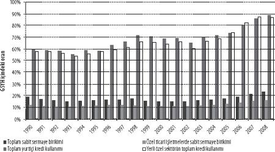

1994 SONRASINDA MEB: FİNANSALLAŞMA VE KRİZ
Apartheid rejiminin sona erdirilmesine ilişkin görüşmeler, siyasi eşitliğin sağlanması, öte tarafta ekonomik yapı ve işleyişe hiç el sürülmemesi üzerine inşa edilmişti. Peki, ama beyaz sermayeye dokunulmayacaksa, Güney Afrika'da kapitalizm ırkçılıktan nasıl arındırılacak, o bir yana, çoğunluk için makul yaşam koşulları nasıl temin edilecekti? Dönüşüme dair uzlaşı, refahın paylaşımıyla ilgili soruları gündem dışı bıraktı; kendini dar siyasi ve anayasal konularla, burjuva düzenin kurulması, demokratik haklar ve liberal demokratik yapıları inşasıyla sınırlandırdı. Beyaz sermaye ise, AUK'den gelebilecek radikal talepler karşısında Ulusal Parti'ye bir set olarak ihtiyaç duyulduğunu bir süre düşünse de, AUK'nin hem kapitalizme hem de kapitalizmin neoliberal biçimine bağlılık sergileyeceğini ispatlamasıyla, böyle bir desteğin gerekmeyeceğini kısa sürede fark etti. Bu bağlılık, AUK'nin kendi Özgürlük Tüzüğü'nde kutsallık atfedilmiş devletleştirme programının, ayrıca apartheid rejiminin yapısal kalıtlarını ele almak üzere tasarlanmış diğer müdahaleci politika önlemleri ve yaklaşımların bir kenara bırakılması anlamına geliyordu. Beyaz sermaye, Ulusal Parti ve AUK önderliği, "rekabet gücü"ne dayalı ekonomik büyüme tercihi, özel sektör yatırımlarına duyulan inanç, liberalleşme, özelleştirme, Merkez Bankasının bağımsızlığı vb. anlayışlar etrafında giderek daha yoğun bir birliktelik ortaya koymaya başladı.[21] Zac De Beer'in[22] kâbusu tanrıya şükür gerçeğe dönüşmeyecek, aparteid rejiminin tasfiyesi sırasında, kurunun yanındaki yaş olarak "hür teşebbüs" de yanmayacaktı.
Yaşanan bu kayma, ulusal kurtuluş hareketlerinin doğasını ve içsel sınırlılıklarını da kısmen gözler önüne sermekte, aynı zamanda değişen dünya koşullarını ve düşünceleri de yansıtmaktaydı. Bu kapsamda Ulusal Parti'nin de sahneden silinmeye başladığı yıllarda, ekonomi reçetelerinde neoliberal tutuculuğu kabul etme noktasına geldiğini belirtelim. Bu yeni koşullar, yeni düzende beyaz sermayenin mülkiyet hakları ve piyasa ilişkileri için güvence aramakla yetinmemesi, faaliyetlerini çok uluslu hale getirme ve finansallaştırma, küresel "aktörler"e dönüşme hakkını da talep etmesi anlamına gelecekti. Bunun yanı sıra, Batılı devletler ile uluslararası finans kuruluşlarından gelen baskılar ve ikna çabaları sonucunda, neoliberal doktrinlerin, finans piyasalarının kanatları altındaki iktisat fakültelerinde ve uluslararası bankalarda bir dizi AUK ekonomik danışmanı ve liderinin eğitimler aldığı görüldü.[23] Ufukta görünen yeni siyah sermaye de bu furyaya katıldı. Aşırı sağcı beyaz hareketin marjinalleşmesi olumlu karşılanırken,[24] hükümetin 1996'da kabul ettiği Büyüme, İstihdam ve Yeniden Bölüşüm programı (GEAR), politikalar üzerindeki çatışmalara dair çözümlerin yüzeysel kaldığını, neoliberalizmin ise bütünüyle benimsendiğini ortaya koyuyordu. GEAR'da vurgu yapılan şeyler, mali kemer sıkma önlemleri, açıkların azaltılması, vergi ve harcamaların GSYH içerisindeki oranları cinsinden sabitlenmesiydi. GEAR ile birlikte ilan edilen makroekonomik öncelikler, enflasyonun dizginlenmesi, finans piyasalarına yönelik mevzuatın gevşetilmesi, gümrük vergilerinin düşürülmesi, ticaretin serbestleştirilmesi ve kamu harcamalarının sınırlandırılması oldu. Tuhaflık şuradaydı ki, doğrudan yabancı yatırımları ülkeye çekme gerekçesiyle hayata geçirilen bu politikalar, sonunda yurtdışına akan yerli sermaye tutarını artırmakla kaldı. Umulan sermaye girişleri gerçekleşmediğinde bile dışarı kaçış durmayacaktı. GEAR programının bugüne dek neden olduklarını şöyle özetleyebiliriz:
• Gümrük tarife engellerinin bir gecede kaldırılmasıyla, siyah işgücünün kullanıldığı emek yoğun imalat sektörlerini kırıp geçirdi ve işsizliği yükseltti.
• Sermaye ve kambiyo üzerindeki denetimin gevşetilmesiyle, holdingler dünyanın önde gelen finans merkezlerine taşınma, böylece küresel hisse senedi piyasalarından faydalanma, sermaye ihraç etme ve devlete bu şekilde sopa gösterme olanaklarını artırdı.
• Şirketleri "ayrıştırma" uygulaması ile apartheid döneminde kurulmuş, çeşitli sektörlerde faaliyet gösteren holdingler ve bağlı kuruluşlar parçalandı; ayrıştırma sonrasında zayıf kalanların satılması ve uluslararası rekabet gücüne sahip olmadığı düşünülenlerin birleştirilmesiyle, holding çatıları altındaki yoğunlaşmalar sözde azaltılırken, diğer tarafta sektör içi yoğunlaşmalar daha da arttı.
• Çekirdek MEB sektörleri dışındaki yurtiçi yatırım eksikliği nedeniyle madencilik sektörünün ihracatına bağımlı kalma durumu derinleşirken, kısa vadeli sermaye girişlerine bağımlı kalınması ve sermaye çıkışlarına olanak tanınması da randın krize yatkınlığını artırdı.
• Siyahların yaşam alanlarına doğru genişleyen perakende sektörü ve ayrıca hizmet sektörü büyürken, bir yandan da geçici ve kayıt dışı istihdam arttı (gelişmekte olan diğer ülkelerde karşılaştırıldığında, kayıt dışı ekonominin yine de görece küçük kaldığını belirtelim.)[25]
Yüksek faiz oranları da yurtiçi yatırımlarına sekte vuracak şekilde işledi. Bunun yanında, enflasyonu düşürmek için devreye sokulan sıkı para politikaları ile yüksek faizlerin bir arada var olması, Güney Afrika'ya özel finans sektörü üzerinden gerçekleşen kısa vadeli sermaye girişlerini artıracaktı.[26] Sermaye girişlerinin kısa vadeli oluşu ise, yerli finans kuruluşlarının kredi açarken sunduğu vadeler üzerinde etki yarattı. Ülkeye giren bu sermayenin çok büyük kısmı finansal spekülasyona ve hane halkına sunulan bireysel kredilerin genişletilmesine yönlendirilecekti. Şekil 2, 1990'dan sonra yurtiçi kredilerde gözlenen genişlemeyi ortaya koyuyor. 2002'de bir düşüş yaşandıysa da, yurtiçi kredilerin GSYH'ye oranı 1995'te yüzde 60'ının altındayken, 2007'ye varıldığında yüzde 85'i aşmış olacaktı. Öte yandan, ticari işletmelerin toplam yatırımlarında finansal varlık alımlarının payı günden güne arttığı için, kredilerdeki bu genişleme, fiziksel yatırımlar şeklinde herhangi bir yansıma da yaratmıyordu (Şekil 3).
Şekil 2. Kredi kullanımı ve yatırımların GSYH içindeki oranı
